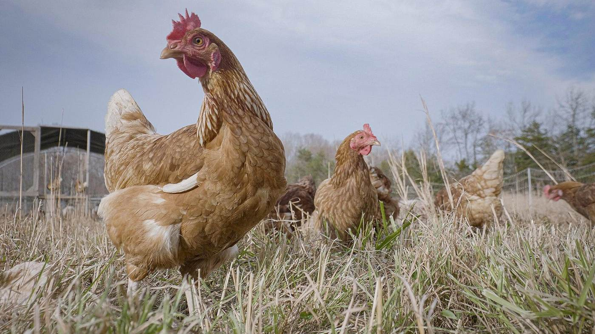
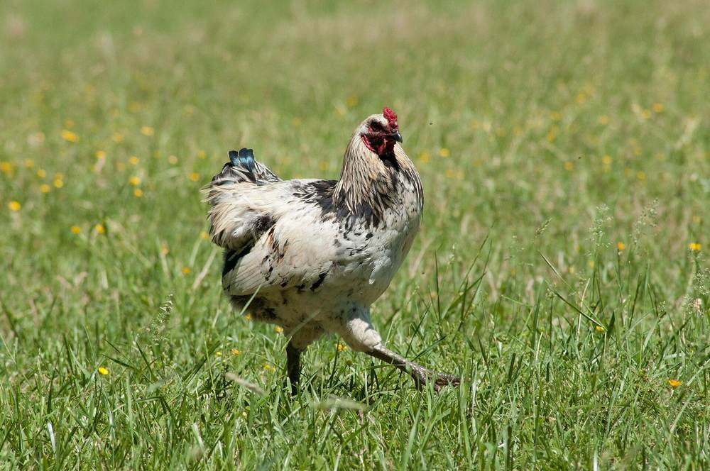
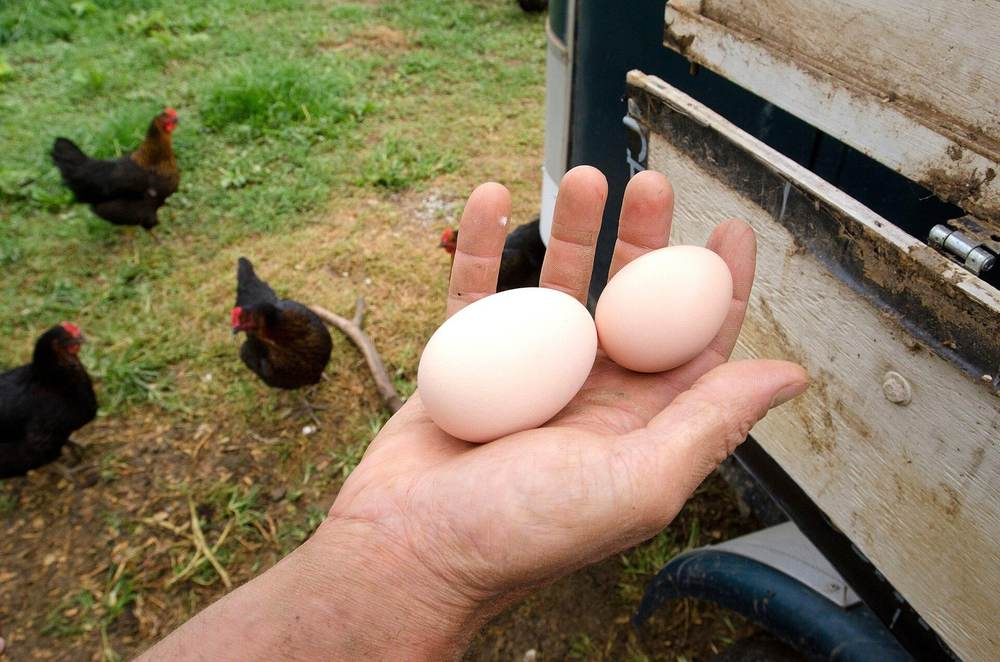

Abattage bio de volailles et de lapins
L'Abattoir de Neuvy
Un abattoir attaché à une ferme, certifié bio Ecocert France depuis 2001. Nous accueillons les éleveurs des Deux-Sèvres et des environs, avec un seul souci : le bien-être des animaux et la traçabilité de chaque lot.
Avis de nos clients
Texte d'exemple : ici, l'avis d'un éleveur sur le sérieux et l'accueil de l'équipe.
Texte d'exemple : ici, un témoignage sur le suivi de chaque lot et la traçabilité.
Texte d'exemple : ici, un avis sur la simplicité à joindre l'abattoir.
En images

